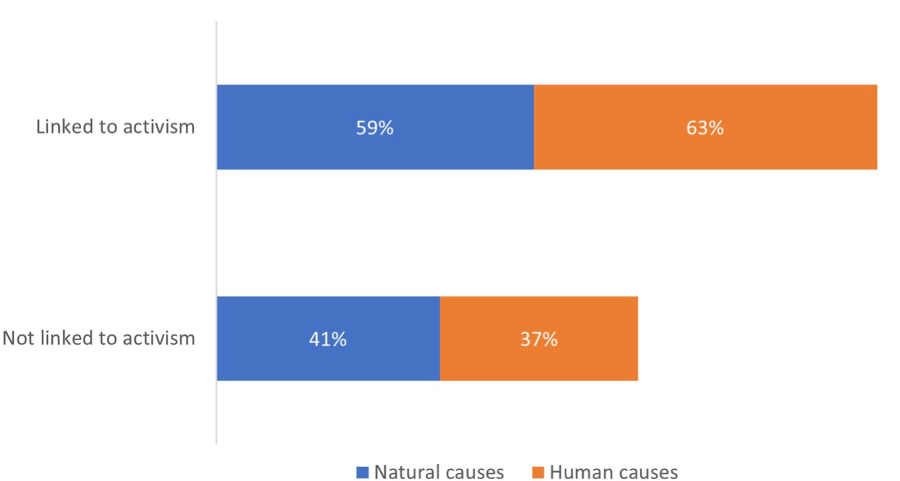

This paper aims to find out whether there is a relationship between access to climate change information and student activism. It is an exploratory study based on a survey of 400 students from 10 universities in Spain, conducted between April and May 2022, using a 19-question questionnaire divided into blocks of knowledge, awareness and action, and a bivariate analysis (margin of error ±5%, confidence level 95%). The greater the information received, the greater the activism of university students, who tend to use digital media and social networks to get informed. However, they perceive that the university generates little information and few activities related to climate change, and demand that universities implement informal, formal and service-learning environmental education strategies on sustainable consumption. The paper urges universities to act as sources of environmental education, given the relationship between the information received and students’ pro-environmental attitudes; as powerful social actors, universities can shape public and political discourses for the eco-social transition. The research adds the variable “access to information” to studies on pro-environmental attitudes and provides data on student perceptions of the climate actions of universities, government, industry and NGOs.
Journal articles · 2024
Climate change literacy and commitment in Spanish university students
Journal of Communication Management, 28(1), 147–164
